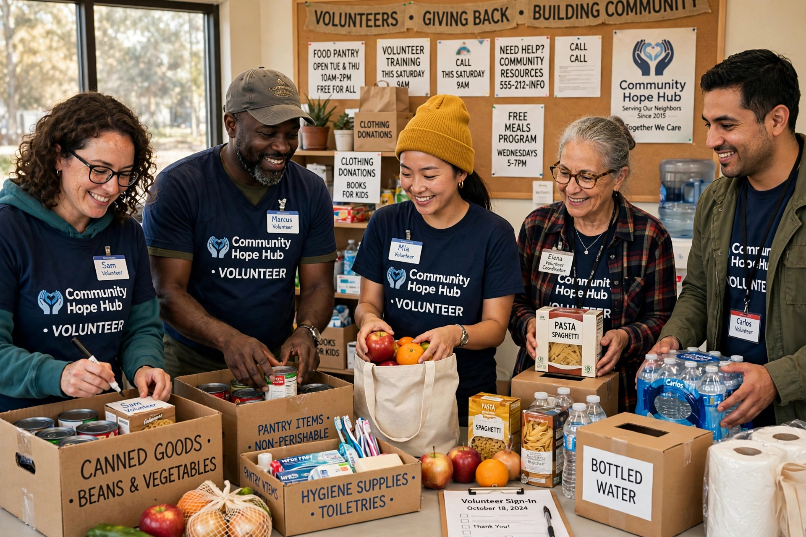

A nonprofit organization (NPO), also known as a non-business entity, not-for-profit organization, or nonprofit institution, is an organization dedicated to furthering a particular social cause or advocating for a shared point of view, whose surplus revenues are reinvested in its mission rather than distributed to shareholders or owners.

Nonprofits may be charities, foundations, trade unions, professional associations, religious organizations, arts groups or advocacy organizations. Many jurisdictions grant tax-exempt status, in the United States commonly under section 501(c) of the Internal Revenue Code, in exchange for public-benefit purposes and limits on political activity.
Nonprofits are typically governed by a board of directors or trustees, employ staff and volunteers, and raise funds through donations, grants, membership dues and earned income. They generally must file public financial reports.
Forms vary by country: associations and foundations in civil-law systems, charitable incorporated organisations in the United Kingdom, and registered charities in many Commonwealth countries. Non-governmental organizations (NGOs) working internationally are usually nonprofits.